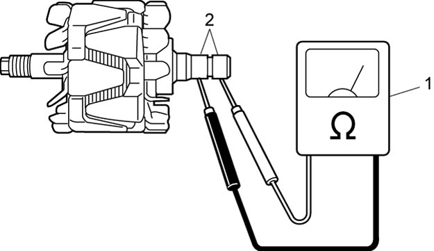
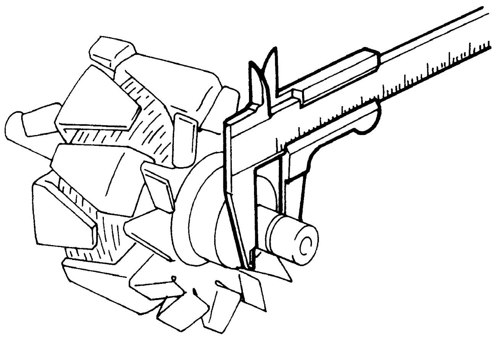
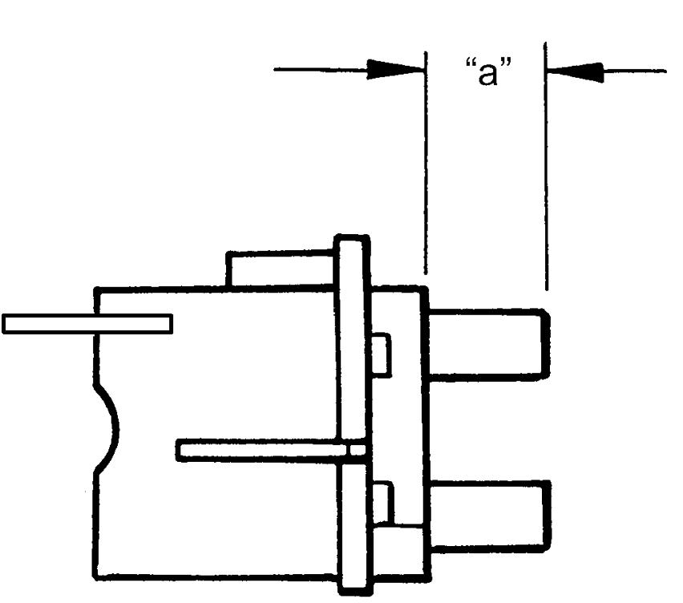
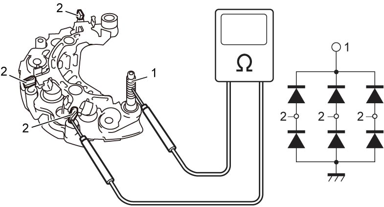
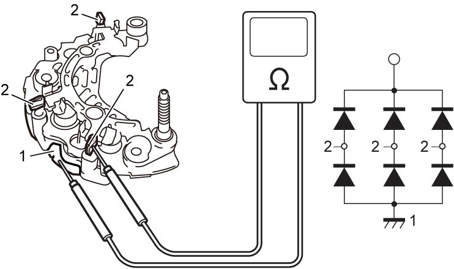
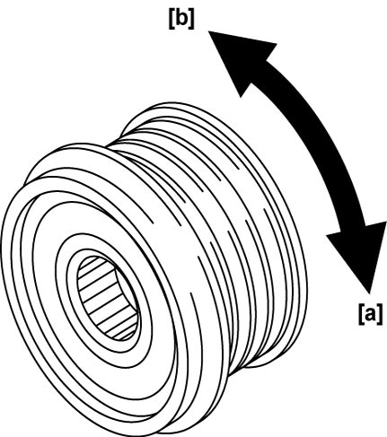

1J
| Generator Inspection |
Rotor
1)Using ohmmeter (1), check for continuity between slip rings (2) of rotor. If there is no continuity, replace generator assembly.

Standard resistance between slip rings of rotor
1.50 – 1.65 Ω at 20 – 25 °C (68 – 77 °F)

 "Expand image")
2)Check slip rings for roughness or score. If they are rough or scored, replace rotor.
Using vernier caliper, measure the slip ring diameter. If the diameter is less than service limit, replace the generator assembly.
Using vernier caliper, measure the slip ring diameter. If the diameter is less than service limit, replace the generator assembly.
Slip ring diameter
Standard: 14.4 mm (0.566 in.)
Limit: 14.0 mm (0.551 in.)

 "Expand image")
Bearing
Check bearing for smooth rotation.
If defective condition is found, replace generator assembly.
Brush
Check each brush for wear by measuring its length as shown. If brush has worn down to service limit, replace generator assembly.
Exposed brush length “a”
Standard: 10.5 mm (0.413 in.)
Limit: 4.5 mm (0.177 in.)

 "Expand image")
Rectifier
NOTE:
If multimeter is used, choose its diode range for this check.
1)Using multimeter or ohmmeter, connect one tester probe to “B” terminal (1) and the other to each rectifier terminal (2).

 "Expand image")
2)Reverse the polarity of tester probes and repeat Step 1).
3)Check that one shows continuity and the other shows no continuity.
If not, replace generator assembly.
If not, replace generator assembly.
4)Using multimeter or ohmmeter, connect one tester probe to each negative (–) terminal (1) and the other to each rectifier terminal (2).

 "Expand image")
5)Reverse the polarity of tester probes and repeat Step 4).
6)Check that one shows continuity and the other shows no continuity.
If not, replace generator assembly.
If not, replace generator assembly.
Pulley
•Check pulley for wear, damage or other abnormal conditions. Replace pulley, if necessary.
•Check pulley according to the following procedure.
•Check pulley according to the following procedure.
a.Hold center of pulley.
b.Check that pulley locks up when turned clockwise [b] and rotates smoothly when turned counterclockwise [a].
If any faulty condition is found, replace pulley.
b.Check that pulley locks up when turned clockwise [b] and rotates smoothly when turned counterclockwise [a].
If any faulty condition is found, replace pulley.

 "Expand image")